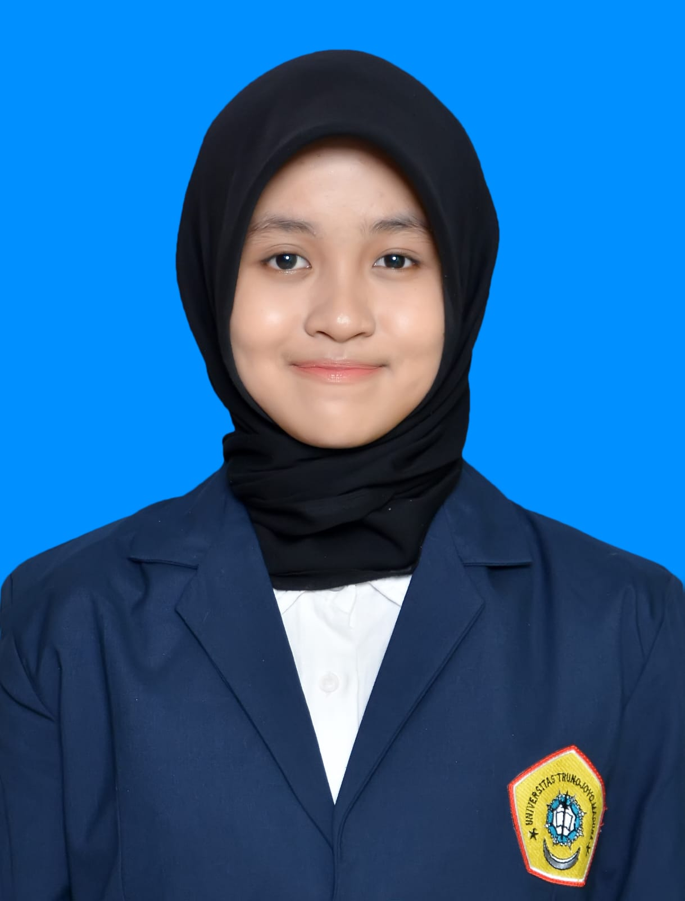

|
 |
|
| Nama Sekolah | SMAN 2 Bangkalan |
| Alamat Sekolah | Jl. Soekarno Hatta No.18, Mlajah Kec. Bangkalan, Kabupaten Bangkalan, Jawa Timur |
| Jurusan Sekolah | SMA |
| Prestasi di Sekolah | - |
| Tahun Masuk | 2021 |
| Nama Universitas | Universitas Trunojoyo Madura |
| Alamat Universitas | Jl. Raya Telang, Kamal, Bangkalan, Jawa Timur |
| Jurusan Universitas | Sistem Informasi |
| Prestasi di Universitas | - |
| Tahun Masuk | 2025 |
| Nama Perusahaan | KEMNAKER |
| Deskripsi | SIAPkerja KEMNAKER adalah sistem informasi dan ekosistem digital terpadu dari Kementerian Ketenagakerjaan RI yang menghubungkan layanan pencari kerja, pelatihan, sertifikasi hingga informasi lowongan pekerjaan. |
| Tahun Mulai - Tahun Selesai | Oktober 2024 - November 2024 |
| Jobdesk | Pelatihan Desain Grafis Muda |
| Nama Organisasi | OSIS |
| Deskripsi | OSIS adalah organisasi siswa resmi di sekolah menengah yang menjadi wadah kegiatan siswa di sekolah. |
| Divisi |
SIE 1 (Keimanan dan Ketaqwaan terhadap Tuhan Yang Maha Esa) SIE 4 (Pembinaan Prestasii Akademik Seni, dan Olahrraga Menurut Bakat dan Minat Si) |
| Tahun |
SIE 1 (2021-2022) SIE 4 (2022-2024) |
| Jobdesk |
SIE 1 : - Panitia Pengurus Pondok Ramadhan - Panitia Penyalur Zakat Fitrah - Panitia Maulid Nabi SIE 4 : - Ketua Pelaksana Smada Futsal Language 2022 - Ketua Pelaksana Classmeet 2023 - Ketua Pelaksana Gebyar Nuansa Seni 2024 |
| Skills |
- Komunikasi yang baik - Bertanggung jawab - Jujur - Bisa tidur 12 jam sehari |
| Achievements | - |
| Other Experience | - |